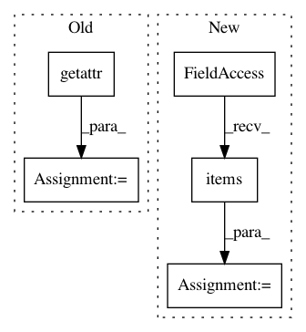

abb4e425ff57acad92d42e92a6c76526a3b49e27,softlearning/samplers/simple_sampler.py,SimpleSampler,sample,#SimpleSampler#,19
Before Change
next_observations=next_observation)
if terminal or self._path_length >= self._max_path_length:
last_path = self.pool.last_n_batch(
self._path_length,
observation_keys=getattr(self.env, "observation_keys", None))
last_path.update({"infos": self._infos})
self._last_n_paths.appendleft(last_path)
self.policy.reset()
After Change
self._current_path["infos"].append(info)
if terminal or self._path_length >= self._max_path_length:
last_path = {
field_name: np.array(values)
for field_name, values in self._current_path.items()
}
self.pool.add_path(last_path)
self._last_n_paths.appendleft(last_path)
self.policy.reset()
In pattern: SUPERPATTERN
Frequency: 3
Non-data size: 5
Instances
Project Name: rail-berkeley/softlearning
Commit Name: abb4e425ff57acad92d42e92a6c76526a3b49e27
Time: 2019-02-04
Author: hartikainen@berkeley.edu
File Name: softlearning/samplers/simple_sampler.py
Class Name: SimpleSampler
Method Name: sample
Project Name: Microsoft/nni
Commit Name: 10d7ece1c34c5533262a54d20d974a3d04f0b7ce
Time: 2020-09-15
Author: 40699903+liuzhe-lz@users.noreply.github.com
File Name: src/sdk/pynni/nni/compression/tensorflow/compressor.py
Class Name:
Method Name: _instrument_model
Project Name: facebookresearch/Horizon
Commit Name: de10f79e39f04779438248be76633e55a11cba41
Time: 2020-04-23
Author: kittipat@fb.com
File Name: reagent/types.py
Class Name: TensorDataClass
Method Name: cuda